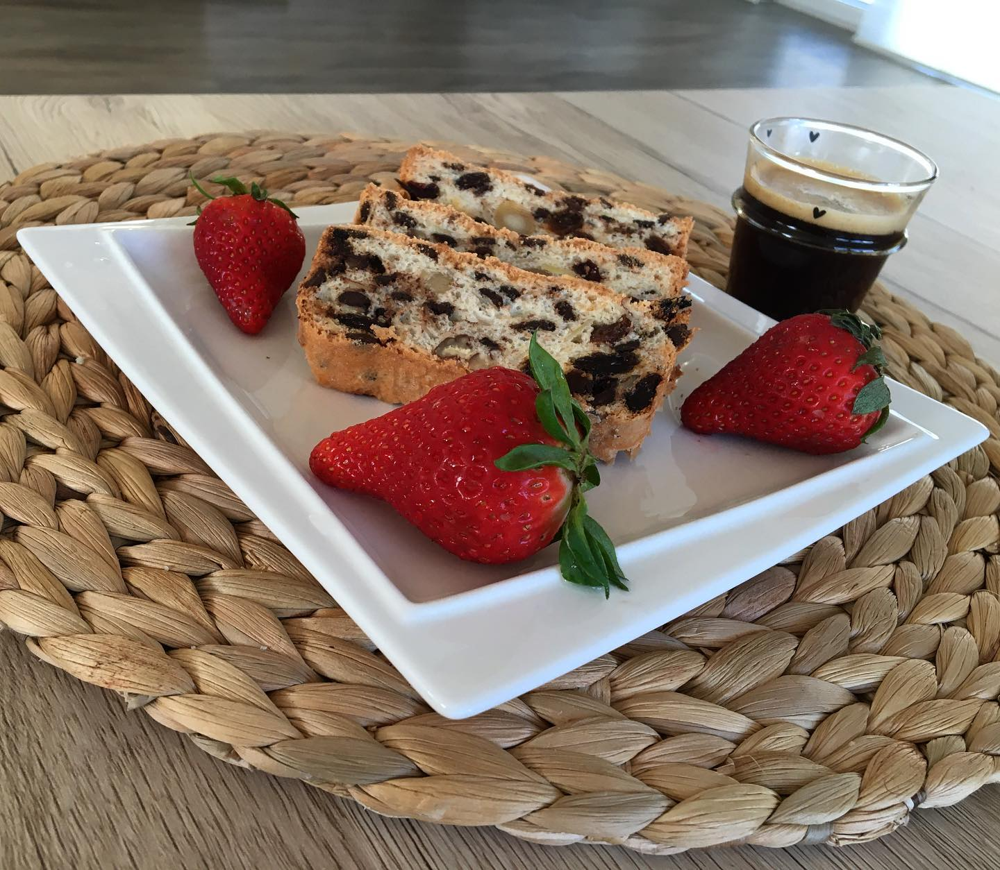

Biskupský chlebíček podľa @sima_sevcikova — Normy Jedál
Když zbudou bílky, tak je tenhle chlebíček je prostě jasná volba... #bilkovychlebicek #cokolada #ovoce #pecu #pecuslaskou #sladkasnidane #biskupskychlebicek #jahody #jentakkekave #zbytkyzlednice